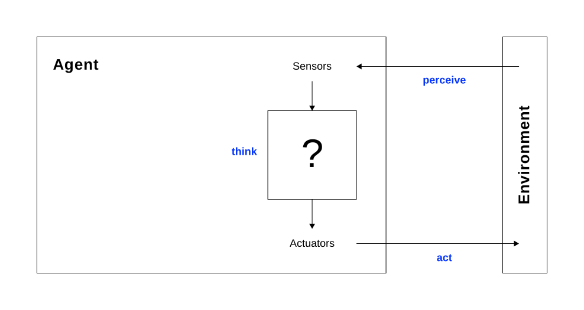

Introduction to AI (I2AI)
Is AI really just a fancy calculator? We examine what sets agents apart — and why the distinction matters.
Is AI different from a calculator? If so, why?
Modern AI has moved beyond isolated "calculators." The paradigm of agency shifts our engineering focus from "correct output" to "intelligent behavior" — accounting for feedback loops, uncertainties, and real-time constraints.
Agency is the capacity of a system to maintain a continuous feedback loop with its environment. Agency requires a mapping of a history of environmental percepts to a sequence of actions designed to achieve a goal or maximize a performance measure. — Russel & Norvig, 2022
What are the core components that define an agent? Explain what each means.
What are the components of the Agent Architecture?
A calculator takes inputs and produces outputs. Could we consider a calculator to be an agent?
Technically yes — but the framing provides no design leverage:
"One could view a hand-held calculator as an agent that chooses the action of displaying '4' when given the percept sequence '2 + 2 =,' but such an analysis would hardly aid our understanding of the calculator … AI operates at … the most interesting end of the spectrum, where the artifacts have significant computational resources and the task environment requires nontrivial decision making."" — p.36, Russel & Norvig, 2022
A rational agent selects an action that is expected to maximize its performance measure, given the prior percept sequence and its built-in knowledge.
Rationality is not about the internal process, but the external outcome.

Rationality is not the same as perfection:
| Metric | Definition | Info Required | Feasibility |
|---|---|---|---|
| Rationality | Maximizes expected performance | Percept sequence + prior knowledge | High — the engineering standard |
| Omniscience | Knows actual outcome of actions | Complete future & present data | Impossible |
| Perfection | Maximizes actual performance | Requires omniscience | Impossible in unpredictable worlds |
Before designing an agent (the solution), the task environment (the problem) must be specified as fully as possible using the PEAS framework.
The task environment must be specified across four dimensions:
Describe the task environment of the following agents using PEAS.
| Type | Performance Measure | Environment | Actuators | Sensors |
|---|---|---|---|---|
| Microwave oven | • Food heated to correct temperature throughout • Heating time minimized • No overcooking, burning, or cold spots |
• Kitchen • Food items of varying types, size, density |
• Magnetron (microwave emitter) • Turntable motor |
• Temperature sensor (interior) • Timer • Door open/close sensor |
| Chess program | • Win the game • Minimize opponent's winning probability • Compute within time limit |
• 8×8 board with 32 pieces • Opponent • Time constraint |
• Move selection output (piece + target square) • Display/board to communicate moves |
• Current board state • Remaining time on the clock • Full game history |
| Autonomous supply delivery | • Package delivered on time and undamaged • Route efficiency • Safety |
• Roads, traffic, pedestrians, … • Delivery addresses and access points • Weather, … |
• Steering, brakes • Cargo hold/release mechanism |
• GPS position • Lidar, radar, cameras • Speedometer, accelerometer, … |
| Bidding on an item at an auction | • Obtain the item (if wanted) • Minimize price paid |
• Auction house / eBay | • Placing a bid (by phone, electronically) | • Eyes, ears |
Task environments can be categorized along seven dimensions:
Which of these games would a rational agent always win and why?
Which of these games would a rational agent always win and why?
For each assertion, say whether it is true or false and support your answer with examples or counterexamples.
For each of the following activities, characterize the task environment in terms of the properties discussed in the lecture.
| Property | Characterization |
|---|---|
| Observability | Partial — field not fully visible; opponent intentions hidden |
| Agents | Multi — cooperative teammates and competitive opponents |
| Determinism | Stochastic — ball bounce and weather introduce uncertainty |
| Episodes | Sequential — actions affect the flow of the game and future options |
| Dynamics | Dynamic — ball and players continuously move while deliberating |
| Continuity | Continuous — speed and position of players and ball sweep smooth ranges |
| Property | Characterization |
|---|---|
| Observability | Partial — sensors limited to local range in dark, murky ocean |
| Agents | Single — currents treated as physical laws, not agents |
| Determinism | Stochastic — unpredictable currents and unknown obstacles |
| Episodes | Sequential — path taken dictates future discoveries and energy budget |
| Dynamics | Dynamic — currents and conditions change while the agent processes data |
| Continuity | Continuous — movement and navigation occur through continuous space and time |
| Property | Characterization |
|---|---|
| Observability | Partial — prices, stock, and inventories across the web not fully visible |
| Agents | Multi — other buyers, algorithmic sellers, and dynamic pricing bots |
| Determinism | Stochastic — item may be bought by a competing agent before checkout |
| Episodes | Sequential — search → evaluate → add to cart → checkout |
| Dynamics | Static / semidynamic — site waits for input; stock may change concurrently |
| Continuity | Discrete — keystrokes and clicks are distinct, separate actions |
| Property | Characterization |
|---|---|
| Observability | Partial — opponent's intentions and muscle movements not directly observable |
| Agents | Multi — strictly competitive opponent |
| Determinism | Stochastic — wind, spin, and string bed variation affect ball trajectory |
| Episodes | Sequential — shot placement determines positioning for the next shot |
| Dynamics | Dynamic — ball and opponent continue to move while player deliberates |
| Continuity | Continuous — ball trajectory, swing angles, and player movement are continuous |
From simple reflex agents to learning agents — a progression in capability, complexity, and autonomy.
Fundamental equation of agency is Agent = Architecture + Program. As we move up the complexity scale, we face a trade-off between flexibility and computational overhead.
What types of agents do you know?
Suggest performance measures for each of the following agents and argue which type of agent should be used.
| Agent | Performance Measure | Agent Type |
|---|---|---|
| Bomb disposal | Bomb does not explode; casualties avoided; mission completed in time | Goal-based; utility-based if time constraints require trade-offs between effectiveness and speed |
| Traffic light control | Minimize avg. wait time; maximize throughput; ensure fairness across lanes | Simple reflex for fixed time cycles; model-based if queue length tracking is required; utility-based for fairness vs throughput utility based agent with tradeoff function |
| Microwave oven | Food heated uniformly to target temperature within set time | Simple reflex — fixed rules (time, power setting) to actions (run magnetron); fully observable, deterministic environment |
| Content moderation | Takedown rate of harmful content; false positive rate; false negative rate; appeal outcomes | Utility-based learning agent for tradeoff between safety and freedom of speech; The utility function itself cannot be fully specified in advance, for two reasons: (1) what counts as harmful content evolves, (2) the appropriate tradeoff between safety and expression is not the same in every context. → So you need a utility-based agent because the problem has irreducible competing objectives, and you need a learning agent because both the environment and the right weighting of those objectives change continuously. Neither alone is sufficient. |
Both the performance measure and the utility function measure how well an agent is doing. What is the difference between the two?
For each of the following task environment properties, rank the example task environments from most to least according to how well the environment satisfies the property. Lay out any assumptions you make to reach your conclusions.
Document classification → Skin cancer diagnosis → Tutoring a student → Driving
Document classification provides the complete, static text upfront. The full image is visible for diagnosis, though subsurface biology and medical history are hidden. In tutoring, the student's true understanding is a hidden variable — only explicit answers are observable. Driving is highly partial: blind spots, truck interiors, and other drivers' intentions are all unobservable.
Assumptions: Document classification provides complete text upfront; diagnosis relies only on the provided image; tutoring treats the student's mental state as hidden.
Climate engineering → Driving → Spoken conversation → Written conversation
Climate engineering involves planetary-scale fluid dynamics operating across sweeping continuous values. Driving sweeps speed, location, and steering angles continuously. Spoken conversation is continuous at the acoustic wave level, even though words are discrete units. Written conversation is strictly discrete — keystrokes, characters, and messages are all distinct.
Assumptions: Climate engineering involves massive fluid models compared to localized driving physics. Spoken conversation is analyzed at the raw audio level.
Soccer → Driving → Poker → Sudoku
Soccer is most stochastic: physical unpredictability (ball bounce, wind) combines with multiple adversarial agents creating chaotic states. Driving is highly stochastic due to unpredictable traffic behaviour and potential hardware failures. Poker is stochastic but constrained — uncertainty is strictly quantified by deck probabilities, without real-world physical chaos. Sudoku is fully deterministic; the board state is entirely determined by the agent's actions.
Assumptions: Soccer's adversarial physical complexity edges out driving. Poker's stochasticity is purely mathematical.
Tax planning → Checkers → Chat room → Tennis
Tax planning is perfectly static — historical data and published laws do not change while the agent computes. Checkers is static: the board does not change while the agent deliberates. A chat room is semidynamic — other agents can post simultaneously, altering context while the agent thinks. Tennis is highly dynamic: ball and opponent continuously move while the player decides how to react.
Assumptions: Tax planning relies on a closed financial year. Checkers is played without a strict clock. Chat room participants do not wait their turn like in a turn-based game.
From reactive rules to autonomous goal pursuit — what changes when agents start acting on their own?
True autonomy is achieved when an agent can compensate for partial or incorrect prior knowledge by learning from its experience. A learning agent consists of four components:
Consider Galileo's experiments at the Tower of Pisa — he wasn't dropping rocks because the action was inherently useful, but to gather data to update his internal model of motion. This tension between exploration (gathering new information) and exploitation (acting on what is already known) is the heart of autonomous learning.
What is Agentic AI?
Autonomous systems designed to pursue complex goals with minimal human intervention.
Core characteristics:
For an AI agent that independently conducts scientific literature reviews, characterize the task environment in terms of the properties discussed in the lecture. Then argue why the scenario requires an agentic AI approach rather than a classical agent design.
| Property | Characterization |
|---|---|
| Partially observable | Cannot access all papers at once; paywalls hide content; relevance only clear after reading; full scope of literature never known |
| Multi-agent | Interacts with search engine algorithms, publisher systems, paywalls, and other softbots — an environment of comparable complexity to the physical world |
| Stochastic | Outcome of queries is uncertain; different searches yield different results; relevance judgments are probabilistic (deterministic only with identical queries) |
| Sequential | Search → filter → read → refine → repeat; early mistakes (e.g., missing a key paper) propagate to later conclusions |
| Dynamic | New papers are constantly published; citations and research trends evolve during the review process (static only with a fixed, frozen corpus) |
| Discrete | Actions such as selecting or excluding a paper are discrete choices |
| Unknown | The agent does not know the full relevant literature in advance, nor the optimal search strategy |
A classical agent design is insufficient — an agentic approach is required for three key reasons:
What remains unclear — about agents, environments, or agentic AI?